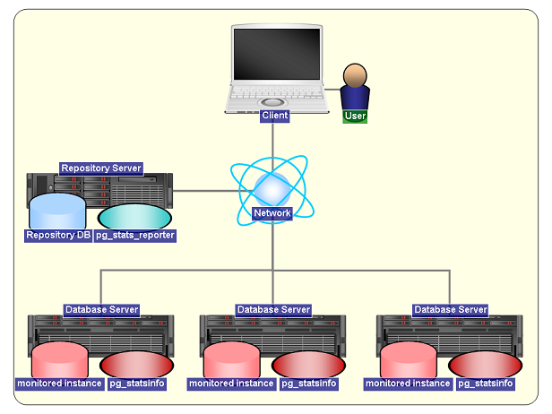
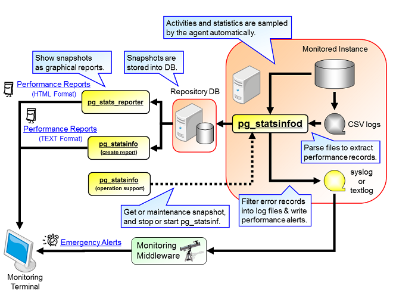

pg_statsinfo is a monitoring tool to record activities and statistics of PostgreSQL server in the form of time series of snapshots. You can examine the snapshots on graphical representations by using pg_stats_reporter.
pg_statsinfo periodically gathers activities and statistics of one or more PostgreSQL servers and packing them as a snapshot. Snapshots are stored into repository database on another or same PostgreSQL server. Besides, it picks up some activities from PostgreSQL's CSV format log files and generates corresponding plain log files including its distinctive messages.
Two or more PostgreSQL instances can share single repository database.
You can check for server health and activities in easy-to-grasp graphical representation by using pg_stats_reporter. It shows various information as interactive tables and graphs.
Components of pg_statsinfo are typically placed as the picture below. Each pg_statsinfo collects the information of the Database Server where it resides on and sends snapshots to the Repository Server. pg_stats_reporter runs behind web server so that the Users can get graphical reports on web browser on the Client.

pic 1: Example system configuration with pg_statsinfo

pic 2: Functional components in pg_statsinfo
pg_statsinfo periodically gathers various information and stores them as snapshots into a repository database. The repository database may reside on one of the monitored PostgreSQL server (DB cluster) and one repository server can store snapshots from multiple servers. Snapshots are generated for every 10 minutes as default and when commanded manually.
Every snapshots holds the following information:
The required storage for every snapshot depends on the numbers of objects in the monitored database. It occupies about 600 - 800kB in typical cases. pg_statsinfo takes snapshots for every 10 minutes by default, so the required storage for all snapshots in a day from every monitored database is roughly estimated to be 90 - 120MB.
You can see the structure of the tables in pg_statsinfo's repository database in this document. (MS Excel document in Japanese).
pg_statsinfo distributes server log entries according to message levels. CSV log, plain text log, and syslog can have their own threshold levels.
pg_statsinfo can store server logs into repository database besides log files.
pg_statsinfo has an alert function which checks for some properties being out of acceptable range. It writes alert logs into text log file and repository if set up to do so, but not to CSV log file.
The default alert function checks for the following properties:
(*1) Table correlation is monitored only for clustered tables, which are the tables having clustering index.
The contents of alert message of each alert item is shown in "report item list of pg_statsinfo v10". (.xls in Japanese).
You can see setup instructions here.
pg_statsinfo has some functions which could be done in command line. Besides, you can get textual reports by command line operations.
* You can see the reference in this section.
You can get a report for the snapshots of a particular period in text format. Following kinds of information are available.
The comprehensive list of report items is shown in "report item list of pg_statsinfo v10". (.xls in Japanese)
Report items are equivalent with pg_stats_reporter.
If you would like to see graphical reports, please try pg_stats_reporter.
pg_statsinfo also provide administrative operations on command-line interface. Command descriptions are below.
pg_statsinfo accumulates snapshots in repository database as it works, so it is necessary to delete stale snapshots. pg_statsinfo has a feature to do that once a day automatically. This feature does following jobs.
It is defaulted to be turned on and will be executed on preset settings.
The snapshots, stored logs and server logs are keeping to increase while this feature is turned off. Manual maintenance should be done properly in the case.
Setup reference of this feature is here.
$ su # rpm -ivh pg_statsinfo-10.0-1.pg10.rhel7.x86_64.rpm
You can build and install pg_statsinfo by following steps using PGXS. Setting up of repository database will be done automatically at first run.
$ cd pg_statsinfo $ tar xzvf pg_statsinfo-10.0.tar.gz $ cd pg_statsinfo-10.0 $ make USE_PGXS=1 $ su # make USE_PGXS=1 install
This section describes the configuration of pg_statsinfo.
This section shows the minimal setting to run pg_statsinfo and setting for ordinary case. In these configurations, pg_statsinfo stores snapshots into the 'postgres' database on the same instance to monitored instance. Detailed explanation for all setting parameters is shown in this section.
# minimal configuration shared_preload_libraries = 'pg_statsinfo' # preload pg_statsinfo libraries log_filename = 'postgresql-%Y-%m-%d_%H%M%S.log' # pg_statsinfo requires this log_filename setting
# recommended configuration
shared_preload_libraries = 'pg_statsinfo' # preload pg_statsinfo libraries
pg_statsinfo.snapshot_interval = 30min # snapshot interval
pg_statsinfo.enable_maintenance = 'on' # enable automatic maintenance ('on' or 'off')
pg_statsinfo.maintenance_time = '00:02:00' # delete old snapshots every day at this time.
pg_statsinfo.repolog_min_messages = disable # disable log accumulation
log_filename = 'postgresql-%Y-%m-%d_%H%M%S.log' # pg_statsinfo requires this log_filename setting
log_min_messages = 'log'
pg_statsinfo.syslog_min_messages = 'error'
pg_statsinfo.textlog_line_prefix = '%t %p %c-%l %x %q(%u, %d, %r, %a) '
pg_statsinfo.syslog_line_prefix = '%t %p %c-%l %x %q(%u, %d, %r, %a) '
track_functions = 'all'
log_checkpoints = on
log_autovacuum_min_duration = 0
#pg_statsinfo.long_lock_threshold = 30s # threshold for getting long lock information
Setup to allow the owner of the PostgreSQL process to log in the PostgreSQL server from localhost without password. "ident" is recommended method for authentication. In order to do that, add the following line to pg_hba.conf when "OS-user = DB-superuser = postgres" which is the most common case. Note that only the first line that matches the condition will be in effect. The "ident" authentication method with TYPE=local would be convenient on Linux.
# TYPE DATABASE USER CIDR-ADDRESS METHOD [for UNIX] local all postgres ident
You can have snapshots involving query statistics using pg_stat_statements. pg_statsinfo automatically detects pg_stat_statements and use it. Installation of pg_stat_statements would be done in the following steps after adding it to shared_preload_libraries in postgresql.conf.
$ psql -d postgres -c "CREATE EXTENSION pg_stat_statements"
You can set the following parameters in postgresql.conf as needed.
Explanation for these parameters is seen in the Configuration section.
Execution statistics itemized by execution plans are available. By installing pg_store_plans on the monitored system, pg_statsinfo collects the execution plan statistics and stores as snapshots.
The parameters below affect the behavior of this feature.
You can see the details in Configuration File.
pg_stats_reporter requires a SQL function provided by pg_store_plans so it is required to be installed also on repository server to show the plan statistics properly in reports. There's no need to load the library so shared_preload_libraries may be left untouched.
That's all. Have fun.
This section explains about maintenance operations and detailed description of configuration parameters for pg_statsinfo.
No specific operation is required to run pg_statsinfo on PostgreSQL startup. Just start the server.
$ pg_ctl start [OPTIONS]
Likewise, pg_statsinfo stops gracefully along with PostgreSQL's shutdown. Shutting down in other than smart mode might cause some error messages, but they do no harm. Just ignore them.
$ pg_ctl stop -m smart [OPTIONS]
pg_statsinfo can stop individually on running PostgreSQL server by the following command.
$ pg_statsinfo --stop [OPTIONS]
Then it starts by the following command.
$ pg_statsinfo --start [OPTIONS]
Note: pg_statsinfo should be preloaded or it won't start by any means.
Pg_statsinfo takes snapshots periodically with the interval determined by pg_statsinfo.snapshot_interval in postgresql.conf.
example: setting snapshot interval time to 30 minutes
pg_statsinfo.snapshot_interval = 30min
Alongside the automatic snapshots, manual snapshots can be taken any time by the following command. The function statsinfo.snapshot takes the label for the snapshot as parameter (text DEFAULT NULL).
$ psql -d postgres -c "SELECT statsinfo.snapshot('comment')"
Manual snapshot is an asynchronous operation so you may find the result of an operation after a while.
Old snapshots are automatically deleted by the automatic repository maintenance function if tuned on.
Detailed explanation for setting up of the function is shown here.
Snapshots deletion can be executed at any time by the function statsinfo.maintenance(timestamptz). This function deletes all snapshots older than the specified timestamp.
Example: Deleting snapshots older than 2014-02-01 07:00:00.
$ psql -d postgres -c "SELECT statsinfo.maintenance('2014-02-01 07:00:00'::timestamptz);"
Log files are cleaned up along with automatic snapshot deletion.
Detailed explanation for setting up of the function is shown here.
pg_statsinfo has the function to capture, manipulate, filter and distribute the server logs from PostgreSQL CSV log files.
The types of log files that pg_statsinfo handles and methods of filtering is described below.
Note 1: PostgreSQL may create a file with the new name mentioned above, which possibly contains stderr messages originate outside PostgreSQL processes. The existing and non-empty "console log" file will be renamed before the rotation.
Note 2: Files with extension ".copy" or ".err.n" may be created at log rotation. In detail see below.
$ ls -l $PGDATA/log -rw------- 1 postgres postgres 433644 Oct 1 23:59 postgresql-2013-10-01_000000.csv -rw------- 1 postgres postgres 322167 Oct 1 23:59 postgresql-2013-10-01_000000.log -rw------- 1 postgres postgres 425449 Oct 2 23:59 postgresql-2013-10-02_000000.csv -rw------- 1 postgres postgres 321695 Oct 2 23:59 postgresql-2013-10-02_000000.log -rw------- 1 postgres postgres 255424 Oct 3 13:40 postgresql-2013-10-03_000000.csv -rw------- 1 postgres postgres 0 Oct 3 00:00 postgresql-2013-10-03_000000.log -rw------- 1 postgres postgres 190786 Oct 3 13:40 pg_statsinfo.log postgresql-2013-10-01_000000.csv ... CSV log that has been rotated postgresql-2013-10-01_000000.log ... Text log that has been rotated (processed log based on the CSV log above) postgresql-2013-10-02_000000.csv ... CSV log that has been rotated postgresql-2013-10-02_000000.log ... Text log that has been rotated (processed log based on the CSV log above) postgresql-2013-10-03_000000.csv ... Latest CSV log postgresql-2013-10-03_000000.log ... Console log pg_statsinfo.log ................... Latest Text log (processed log based on the latest CSV log)
pg_statsinfo.textlog_min_messages = warning
pg_statsinfo.textlog_nologging_users = 'postgres'
pg_statsinfo.adjust_log_level = on pg_statsinfo.adjust_log_info = '42P01'
pg_statsinfo also can accumulate logs into repository database.
The same types of filtering to text log file can be used with partially different settings.
Log accumulation is recommended to be disabled when the repository is located on the same instance as observed database. Log accumulation inserts records into a repository database so with log_statements set to "all" or "dml", an insertion of an issued log message in turn issues another log message. This self-recursive log emitting will be prevented by setting the user-id for the repository connection to superusers or setting log_statements to other than "all" or "dml" in the configuration file.
Old log entries in the repository database is deleted by the automatic maintenance feature.
This feature is enabled by default.
Click here to see how to set up the automatic maintenance.
Alert function works according to the corresponding row to the
observed instance in the repository table statsrepo.alert. Columns in
the row define the threshold of respective alerting items. Setting -1
silences the alert.
The details of the table are shown below.
| column name | data type | default value | description |
|---|---|---|---|
| instid | bigint | (no default) | Instance ID of the instance to be monitored |
| rollback_tps | bigint | 100 | Alert threshold: ROLLBACK per second during a snapshot interval |
| commit_tps | bigint | 1000 | Alert threshold: COMMIT per second during a snapshot interval |
| garbage_size | bigint | -1 | Alert threshold: Table dead space size in megabytes in a snapshot |
| garbage_percent | integer | 30 | Alert threshold: Table dead space ratio in % |
| response_avg | bigint | 10 | Alert threshold: Query average response time in seconds for a snapshot interval |
| response_worst | bigint | 60 | Alert threshold: Query longest response in seconds for a snapshot interval |
| fragment_percent | integer | 70 | Alert threshold: The absolute value of pg_stats.correlation |
| backend_max | integer | 100 | Alert threshold: Maximum number of backend for a snapshot interval |
| disk_remain_percent | integer | 20 | Alert threshold: Available disk space for tablespaces in percent(%) |
| loadavg_1min | real | 7.0 | Alert threshold: Load average for 1 minutes |
| loadavg_5min | real | 6.0 | Alert threshold: Load average for 5 minutes |
| loadavg_15min | real | 5.0 | Alert threshold: Load average for 15 minutes |
| swap_size | integer | 1000000 | Alert threshold: Disk swap usage in kilobytes |
| rep_flush_delay | integer | 100 | Alert threshold: Replication delay in megabytes of WAL amount |
| rep_replay_delay | integer | 200 | Alert threshold: Replication replay delay in megabytes of WAL amount |
| enable_alert | boolean | true | Setting false disables all alerts on this observed instance. |
Example: Set ROLLBACKs threshold to 3000 times per second for a snapshot interval.
# UPDATE statsrepo.alert SET commit_tps = 3000 WHERE instid = <instance ID\>
Deleting a row disables all alerts on the corresponding observed instance. Re-enabling requires inserting a new tuple in the case.
The whole alert function is disabled by setting the GUC parameter pg_statsinfo.enable_alert. Setting enable_alert column in the alert configuration table to false silences alerts for the corresponding instances.
$ pg_statsinfo -r REPORTID [-i INSTANCEID] [-b SNAPID] [-e SNAPID] [-B DATE] [-E DATE] [-o FILENAME] [connection-options]
The following example shows a basic usage using the repository database 'postgres' at localhost:5432 accessing as the user 'postgres', which generates the report that is,
$ pg_statsinfo -r All -h localhost -d postgres -p 5432 -U postgresAvailable options are described below,
$ pg_statsinfo -l [-i INSTANCEID] [connection-options]
The following example shows the command to list the all snapshots stored in the repository database 'postgres' at localhost:5432 accessing as the user 'postgres'.
$ pg_statsinfo -l -h localhost -d postgres -p 5432 -U postgres
$ pg_statsinfo -s [connection-options]
The following example is the command to show the size of the repository database 'postgres' at localhost:5432 accessing as the user 'postgres'.
$ pg_statsinfo -s -h localhost -d postgres -p 5432 -U postgres
$ pg_statsinfo -S COMMENT [connection-options]
The following example is the command to tell to take a snapshot of the monitored instance into the repository database 'postgres' at localhost:5432 accessing as the user 'postgres', providing it with the comment 'COMMENT'.
$ pg_statsinfo -S 'COMMENT' -h localhost -d postgres -p 5432 -U postgres
$ pg_statsinfo -D SNAPID [connection-options]
The following example is the command to tell to delete a snapshot specified by SNAPID in the repository database 'postgres' at localhost:5432 accessing as the user 'postgres'.
$ pg_statsinfo -D 123 -h localhost -d postgres -p 5432 -U postgres
$ pg_statsinfo --stop [connection-options]
The following example is the command to tell pg_statsinfo agent to stop by connecting the monitored instance via the database 'postgres' of the user 'postgres' at localhost:5432.
$ pg_statsinfo --stop -h localhost -d postgres -p 5432 -U postgres
$ pg_statsinfo --start [connection-options]
The following example is the command to tell pg_statsinfo agent to start by connecting the monitored instance via the database 'postgres' of the user 'postgres' at localhost:5432.
$ pg_statsinfo --start -h localhost -d postgres -p 5432 -U postgres
This section describes about the connection options of pg_statsinfo which are common among all subcommands. These options are shared with PostgreSQL and has the same meanings. The connection target will be a repository database when the command manipulates snapshots or the monitored database when the command tells to do something to the agent.
Repository database will piled high with snapshots and log directory will face the same situation if older data were left being there. pg_statsinfo deletes them by itself so as not to fill up storage space. This maintenance is executed once every day and it is set up in postgresql.conf as follows,
ex 1: Removing snapshots aged more than 7 days at every 0:02 am.
pg_statsinfo.enable_maintenance = 'snapshot' pg_statsinfo.maintenance_time = '00:02:00' pg_statsinfo.repository_keepday = 7
ex 2: Removing logs on the repository aged more than 7 days at every 0:02 am.
pg_statsinfo.enable_maintenance = 'repolog' pg_statsinfo.maintenance_time = '00:02:00' pg_statsinfo.repository_keepday = 7
ex 3: Archiving and remove CSV logs before the day before at every 0:02 am.
pg_statsinfo.enable_maintenance = 'log' pg_statsinfo.maintenance_time = '00:02:00' pg_statsinfo.log_maintenance_command = '/archive_remove_pglog.sh %l'
Where archive_remove_pglog.sh does, as the name suggests, will archive and remove a log file.
ex 4: Removing both snapshots and logs on the repository aged more than 7 days and archiving and deleting CSV logs before 7 days before.
pg_statsinfo.enable_maintenance = 'on' pg_statsinfo.maintenance_time = '00:02:00' pg_statsinfo.repository_keepday = 7 pg_statsinfo.repolog_keepday = 7 pg_statsinfo.log_maintenance_command = 'Note: All monitored instance sharing one repository database execute this maintenance for the same repository so the following setting results in that snapshots aged more than 3 days won't survive after maintenance process of all instance is finished./archive_pglog.sh %l'
<Monitoring instance1> pg_statsinfo.enable_maintenance = 'snapshot' pg_statsinfo.repository_keepday = 7 <Monitoring instance2> pg_statsinfo.enable_maintenance = 'snapshot' pg_statsinfo.repository_keepday = 5 <Monitoring instance3> pg_statsinfo.enable_maintenance = 'snapshot' pg_statsinfo.repository_keepday = 3
Configuration parameters and their meanings are described below.
pg_statsinfo reads configuration parameters written in postgresql.conf for the monitored instance. Reloading configuration file of PostgreSQL also affects pg_statsinfo.
| Name | Setting | Description |
|---|---|---|
| shared_preload_libraries | 'pg_statsinfo' | Preloading libraries. This is a parameter not of pg_statsinfo's own but needed in order to run pg_statsinfo. |
| log_filename | 'postgresql-%Y-%m-%d_%H%M%S.log' | This is also a PostgreSQL's parameter and must be set for pg_statsinfo so that it runs properly. Log files must be ordered by creation time using alphabetical comparison of file names, so the variable parts "%Y", "%m", "%d", "%H", "%M" and "%S" are all should occur in this order in this format string. |
| track_counts | on | Enables collection of statistics on database activity. pg_statsinfo depends on the statistics enabled by this parameter. |
| track_activities | on | Enables the collection of information on the currently executing command of each session. pg_statsinfo depends on the information enabled by this parameter. |
| log_min_messages | debug5 ∼ log | Message level threshold for CSV logs. pg_statsinfo uses this as the source of log distribution, so it must be the same or more verbose to the settings of pg_statsinfo.syslog_min_messages, pg_statsinfo.textlog_min_messages and pg_statsinfo.repolog_min_messages. |
| log_destination | must have 'csvlog' and can have 'syslog' or 'eventlog' optionally | pg_statsinfo needs server logs to be emitted to CSV logs, 'stderr' will be silently removed by pg_statsinfo even if it is occurred. |
| logging_collector | on | pg_statsinfo always forces this tuned on on startup. |
Following are PostgreSQL parameters affect the behavior of pg_statsinfo and pg_statsinfo's dedicated parameters. Changes will be in effect after reloading configuration file.
| Name | Default Setting | Description |
|---|---|---|
| track_functions | none | Enables tracking of function call counts and time used. Setting this to 'pl' or 'all' let pg_statsinfo collect call statistics of functions. |
| track_io_timing | off | Enable timing of database I/O calls. Enabling this let pg_statsinfo collect I/O statistics. Note that enabling this may cause significant overhead on some platforms. |
| log_checkpoints | off | Causes checkpoints to be logged in the server log. Enabling this let pg_statsinfo collect checkpoint activities. |
| log_autovacuum_min_duration | -1 | Causes autovacuums to be logged in the server log. Enabling this let pg_statsinfo collect autovacuum activities. Setting to 0 ∼ 1min is recommended. |
| log_directory | 'log' | Directory location for csvlog and textlog files. pg_statsinfo reads this to know the location of log files. |
| log_rotation_age | 1d | Rotates logs in this duration. |
| log_rotation_size | 10MB | Rotates logs if the size of the current CSV log file exceeds this size. |
| syslog_facility | 'LOCAL0' | syslog facility when syslog is enabled. |
| syslog_ident | 'postgres' | syslog indent when syslog is enabled |
| pg_statsinfo.textlog_min_messages | warning | Minimum message level for textlog (*1). |
| pg_statsinfo.syslog_min_messages | disable | Minimum message level for syslog (*1). |
| pg_statsinfo.textlog_filename | 'pg_statsinfo.log' | Textlog filename. Should not be empty. |
| pg_statsinfo.textlog_line_prefix | '%t %p ' | A printf-style string that is output at the beginning of each textlog line. (*2) |
| pg_statsinfo.syslog_line_prefix | '%t %p ' | A printf-style string that is output at the beginning of each syslog line. (*2) Note that timestamp and process ID in syslog are them of pg_statsinfo daemon, not of original ones. You need to add %t and %p to preserve the original values. |
| pg_statsinfo.textlog_permission | 0600 | Permission mode for textlog file. |
| pg_statsinfo.textlog_nologging_users | - | Exclude log lines of these users separated by commas from text log . |
| pg_statsinfo.repolog_min_messages | warning | Minimum message levels for repository
log (*1). Log accumulation is recommended to be disabled when the repository is located on the same instance as observed database. |
| pg_statsinfo.repolog_nologging_users | - | Exclude log lines of these users separated by commas from repository log. |
| pg_statsinfo.repolog_buffer | 10000 | Since repository logs are sent to repository every 10 seconds by default, pg_statsinfo needs to buffer logs for the intervals. Additionally, this buffer is expected to absorb a transient burst of log entries which might retard storing them. Log entries which are run over this buffer are simply dropped off. |
| pg_statsinfo.repolog_interval | 10s | Repository logs are written at intervals of this value. |
| pg_statsinfo.sampling_interval | 5s | Sampling is a process collecting some additional information such like session states that is performed several times for a snapshot interval. This value should be far smaller than the snapshot interval (*3) |
| pg_statsinfo.snapshot_interval | 10min | snapshot interval (*3) |
| pg_statsinfo.excluded_dbnames | 'template0, template1' | Exclude databases listed here from monitoring. |
| pg_statsinfo.excluded_schemas | 'pg_catalog, pg_toast, information_schema' | Exclude schemas listed here from monitoring. |
| pg_statsinfo.repository_server | 'dbname=postgres' | Connection string to connect the repository (*4). Password prompt must be avoided. |
| pg_statsinfo.adjust_log_level | off | Enables or disables log level altering feature. |
| pg_statsinfo.adjust_log_info | - | A comma-separated list of SQLSTATE codes(*5) specifying messages to change loglevel to INFO. (*5) |
| pg_statsinfo.adjust_log_notice | - | Ditto but changes to NOTICE. |
| pg_statsinfo.adjust_log_warning | - | Ditto but changes to WARNING. |
| pg_statsinfo.adjust_log_error | - | Ditto but changes to ERROR. |
| pg_statsinfo.adjust_log_log | - | Ditto but changes to LOG. |
| pg_statsinfo.adjust_log_fatal | - | Ditto but changes to FATAL. |
| pg_statsinfo.enable_maintenance | 'on' | Enable or disable auto maintenance features. Multiple items should be comma separated.
|
| pg_statsinfo.maintenance_time | '00:02:00' | Time to do automatic maintenance. |
| pg_statsinfo.repository_keepday | 7 | Snapshots are preserved for this period. |
| pg_statsinfo.repolog_keepday | 7 | Repository logs are preserved for this period. |
| pg_statsinfo.log_maintenance_command | <PGHOME>/bin/archive_pglog.sh %l | Command path to be executed to do log file maintenance. Default value is a ready-made shell script which archives old log files into compressed files then removes them. |
| pg_statsinfo.long_lock_threshold | 30s | Time to wait before record prolonged locks. |
| pg_statsinfo.stat_statements_max | 30 | Maximum number of entries for both of pg_stat_statements and pg_store_plans to be recorded on every snapshot. |
| pg_statsinfo.stat_statements_exclude_users | - | Name of users in comma-separated list whose queries in pg_stat_statements and pg_store_plans are not recorded. |
| pg_statsinfo.controlfile_fsync_interval | 1min | Interval to sync pg_statsinfo's control file. |
| pg_statsinfo.enable_alert | on | Off disables all alerts for this instance. |
| pg_statsinfo.target_server | - | Connection string for the observed instance. (*4) pg_statsinfo requires a connection to the observed instance to collect status values. By default, the connection is made to the default database using OS username. This parameter offers more flexible connection settings. Make sure to use a superuser of the database for the connection. |
pg_statsinfo shares the PostgreSQL's postgresql.conf as its configuration file. Simply reloading configuration on PostgreSQL where pg_statsinfo resides on also reloads its configurations.
$ pg_ctl reload
pg_statsinfo doesn't involve PostgreSQL in its crash but it won't restart automatically. Manually start the agent will help.
pg_statsinfo doesn't remove the data of no-longer-monitored instance automatically. Manually deleting corresponding records in statsrepo.instance removes all the data of the instance from repository.
$ psql -d postgres -c "DELETE FROM statsrepo.instance WHERE instid = <instance ID to delete>"
When you uninstall pg_statsinfo, you have to restart PostgreSQL server after removing 'pg_statsinfo' from shared_preload_libraries and all of pg_statsinfo.* parameters in postgresql.conf.
After that, drop all objects created for pg_statsinfo in the monitored instance. $PGSHARE/contrib/uninstall_pg_statsinfo.sql will do it. The following command will remove such objects for 'postgres' database.
$ psql -d postgres -f $PGSHARE/contrib/uninstall_pg_statsinfo.sql
Repository database is uninstalled by running the script uninstall_pg_statsrepo.sql. Make sure that no other monitored instances are using the same repository database.
$ psql -d <repository> -f $PGSHARE/contrib/uninstall_pg_statsrepo.sql
There are still some restrictions and limitations in pg_statsinfo.
$ createuser -DRSl -U <superuser> <connection user> $ createdb -U <superuser> -O <connection user> <repository database>
repository=$ SET TIME ZONE 'PRC'; select '2014/1/1 0:0:0 CST'::timestamptz;
timestamptz
------------------------
2014-01-01 14:00:00+08
(1 row)
Take a manual snapshot, then confirm that the snapshot is stored in repository. The following steps will do.
$psql -d postgres -c "SELECT statsinfo.snapshot('test')"
$psql -d postgres -c "SELECT * FROM statsrepo.snapshot WHERE COMMENT = 'test'"
The snapshots in repository can be of course inspected using sql queries but it needs too much labor for most cases. You can use pg_statsinfo's command line reporting feature to see them as simple reports in text format. For those who wants to see them in graphical interface, pg_stats_reporter provides sortable tables with pager and manipulative graphs. An operable sample is available here.
Perhaps it might be misconfigured. Make sure your configuration is correct. Above all, enable_maintenance should be 'on' or include 'snapshot'.
Set commit alert threshold to 0, then taking a snapshot manually should give you a commit count alert message in server log.
# UPDATE statsrepo.alert SET enable_alert = true, commit_tps = 0;
Don't forget to restore the setting as before after the check.
Sorry but you can't. You should uninstall the older version first, then install new one. Furthermore, the repository database schema of 3.3 is not compatible with the older versions.
Please uninstall the old repository, and drop its schema before running new version. Then restart all the monitored instances.
Two or more snapshots in the repository are required to generate a report. If there wasn't sufficient snapshots during the specified period, you will get a report after some waiting.
Some of the report items need additional settings and some others have restrictions.
pg_store_plans may be installed in the schema other than "public". You will find the following lines in server log for the case.
ERROR: pg_statsinfo: query failed: ERROR: relation "pg_store_plans" does not existDo DROP EXTENSION, then CREATE EXTENSION again explicitly specifying public as installation schema in order to fix this.
CREATE EXTENSION pg_store_plans SCHEMA public;
An attempt of taking a snapshot will be canceled if the previous snapshot has not completed. The completion of a snapshot could be prolonged by Access Exclusive Locks on tables or indexes since it acquires Access Share Lock on them.
pg_statsinfo identifies an "instance" by instance-id, which is generated from hostname, port number and database system ID, which pg_controldata shows. Among the triplet, the host name of the master will generally be changed by a fail over so this situation happens. Currently there is no available means of preventing this occurring.
Following changes have been made after pg_statsinfo 3.3.
More advanced usages and internal structures are explained in the section.
As described above, multiple monitored instances can share single repository database. In order to build such configuration, the repository server should accept connections from the monitored instances without password prompts and the combination of PostgreSQL's system identifier, node name given by uname(2) and PostgreSQL's listen port number should be different from any other monitored instance.
pg_statsinfo checks for the validity of repository database at startup and reloading configuration file and it enters fall-back mode if any problem found in the repository. Fall-back mode of pg_statsinfo is a running state that enables only the functions available without repository access.
Followings are the lists of what is checked for in repository sanity check, and what is disabled on fall-back mode.
These functions disabled in fallback mode resume working after restoration. All snapshots, alerts during fallback mode are lost forever. On the contrary, log accumulation will be continued at the point of fallback.
pg_statsinfo recovers automatically from fallback mode due to connection error. Otherwise, reloading configuration after removing the cause is needed to recover from fallback.
Usually you can see the cause in log file.
Followings are the common error messages for fallback.
# Connection failure ERROR: pg_statsinfo: could not connect to database with "host=192.168.0.1 user=postgres": timeout expired LOG: pg_statsinfo: pg_statsinfo is starting in fallback mode # Wrong version number of repository database schema ERROR: pg_statsinfo: incompatible statsrepo schema: version mismatch LOG: pg_statsinfo: pg_statsinfo is starting in fallback mode
The ways to recover from common issues are shown below.
SystemTap is available to monitor PostgreSQL on RHEL6, Fedora13 and later.
$ usermod -g stapdev postgres
$ stap -m statsinfo_prof pg_statsinfo_profile.stp
After the above steps done, pg_statsinfo takes snapshots including Systemtap information.
This is an experimental feature requires --enable-debug and puts some burden on running server so please refrain from using this on commercial systems.
pg_statsinfo consists of a library loaded on PostgreSQL and a daemon process. Since the daemon is executed implicitly by the library at server startup, users don't have to execute the daemon explicitly.
See also "pg_statsinfo: internal" for details.We will explain how to rotate log when pg_statsinfo distribute server log. At first, the case files with ".copy" extension is created. After, the case files with ".err.n"is created.
This file is created to prevent overwriting existing files on a log rotation. The files of the name are storing some server logs that doesn't fit csv format such like error messages from restore_command.
Restarting after a server crash or stopping agent may leave a file of the name. This occurs when pg_statsinfo could not resume reading the last *.csv log file it had processed on stopping, and then pg_statsinfo renames existing *.log file corresponding to the CSV log file with that extension. The content of the CSV file might not be fully processed for the case.
This file also can be created on starting from a base backup. Removing the file $PGDATA/pg_statsinfo.control before starting a server prevents this from occurring for this case.